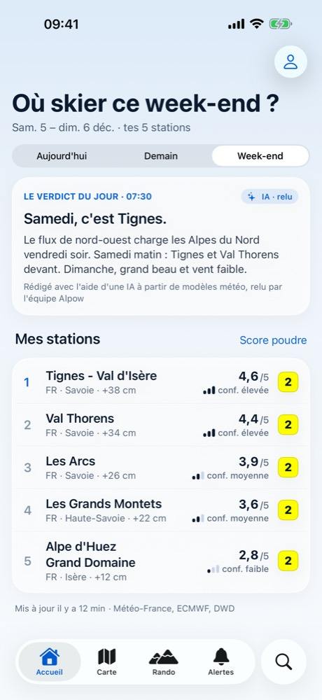
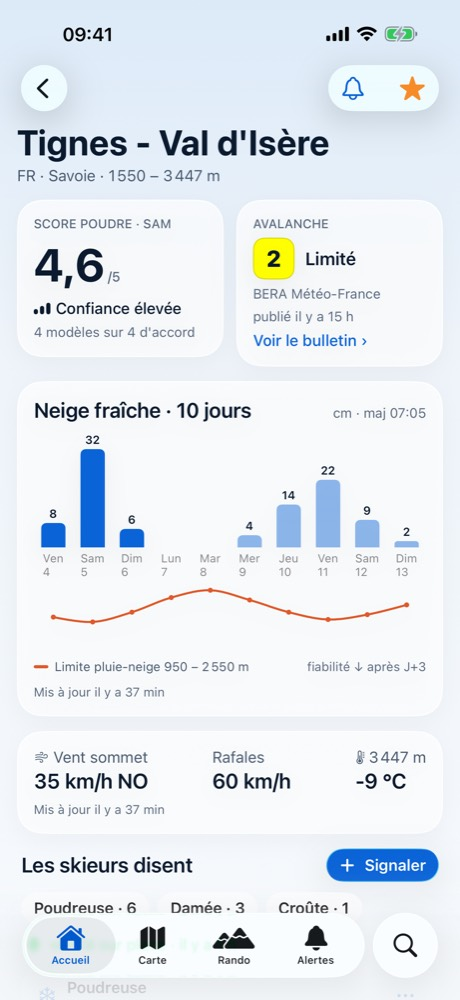
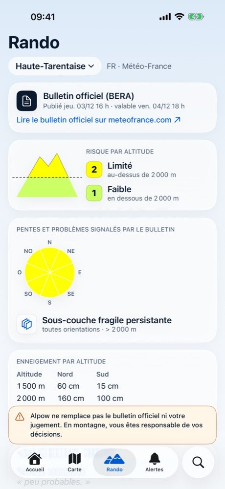
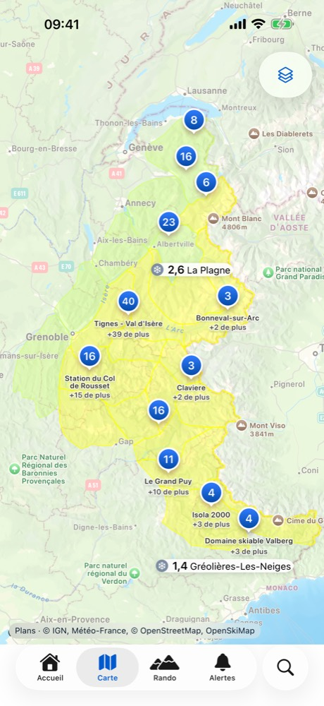
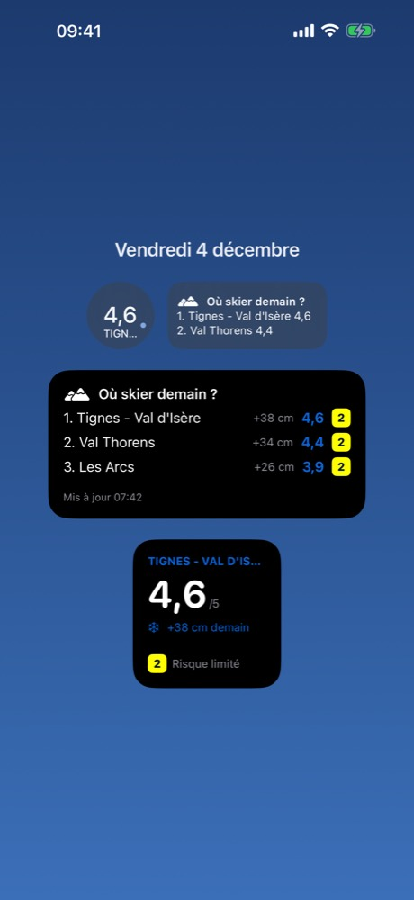

Où skier ce week-end ?
Alpow compare la neige attendue dans les stations des Alpes et des Pyrénées, la classe avec un Score poudre de 0 à 5, et affiche le bulletin avalanche officiel tel quel.
Bientôt sur l'App Store
Ce que fait Alpow
Le Score poudre
Un chiffre de 0 à 5 par station, calculé à partir de quatre modèles météo (Météo-France AROME et ARPEGE, ECMWF, DWD ICON). Trois barres disent si les modèles sont d'accord.
Le bulletin avalanche, toujours gratuit
Le BERA de Météo-France, mot pour mot : risque par altitude, pentes exposées, problèmes d'avalanche, enneigement. Jamais résumé par une IA, jamais payant.
Les pentes de plus de 30°
La carte des pentes de l'IGN et le risque par massif sur une carte en relief, pour préparer une sortie en rando.
Des retours vérifiés sur place
Poudreuse, croûte, damée… en trois taps, seulement si tu étais sur le domaine dans les six dernières heures. Ta position ne quitte jamais ton iPhone.
Widgets et alertes poudre
Ta station sur l'écran verrouillé, le top 3 de demain sur l'écran d'accueil, et une notification quand ça tombe. Jamais entre 22 h et 7 h.
Sans compte, sans pub, sans pisteur
Pas d'inscription, pas de publicité, aucun outil d'analyse tiers. Tes stations favorites restent sur ton iPhone.
En vidéo
L'app



